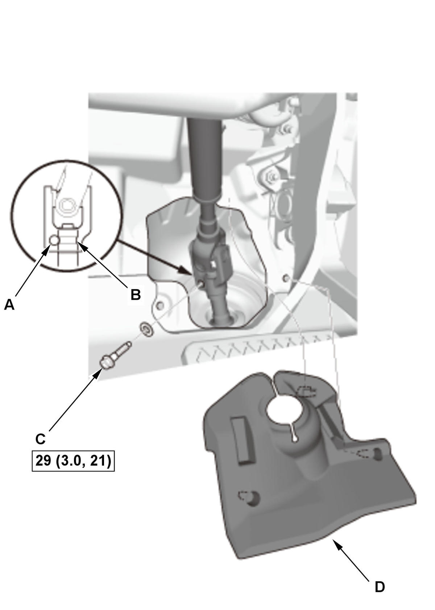

Steering Joint Disconnection and Reconnection: Installation
NOTE: How to read the torque specifications .
- Steering Joint - Connect
1. Set the rack in the straight ahead driving position. 2. Cut the wire (A).
3. Slip the lower end of the steering joint (B) onto the pinion shaft (C).
NOTE:
- Pinion shaft with center guide: Install the steering joint by aligning the center guide (D).
- Pinion shaft without center guide: Position the steering column by aligning the gap (E) within the angle.

Courtesy of HONDA, U.S.A., INC.4. Align the bolt hole (A) on the steering joint with the groove (B) around the pinion shaft. 5. Loosely install the steering joint bolt (C).
6. Be sure that the joint bolt is securely in the groove in the pinion shaft.
7. Pull on the steering joint to make sure that the steering joint is fully seated.
8. Tighten the steering joint bolt to the specified torque.
9. Install the steering joint cover (D).
NOTE: Check the steering joint cover for damage and cracks. If the steering joint cover is cracked, replace the steering joint cover.
- Steering Wheel Holder Tool - Remove
- Steering Wheel Spoke Angle - Check
1. Check the steering wheel spoke angle. 2. If the steering spoke angles to the right and left are not equal (steering wheel is not centered), correct the engagement of the wheel/column shaft splines.
- Wheel Alignment - Check
- VSA Sensor Neutral Position - Memorize